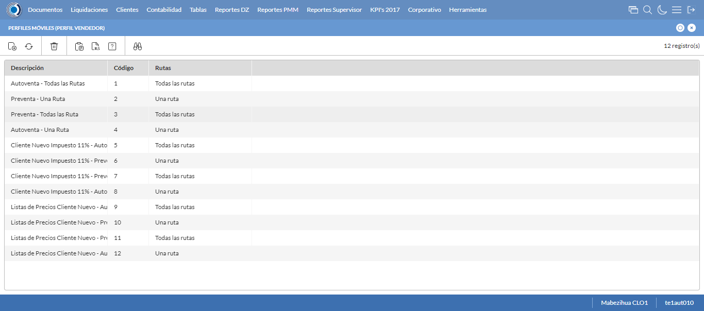
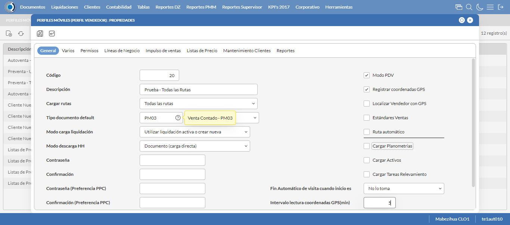
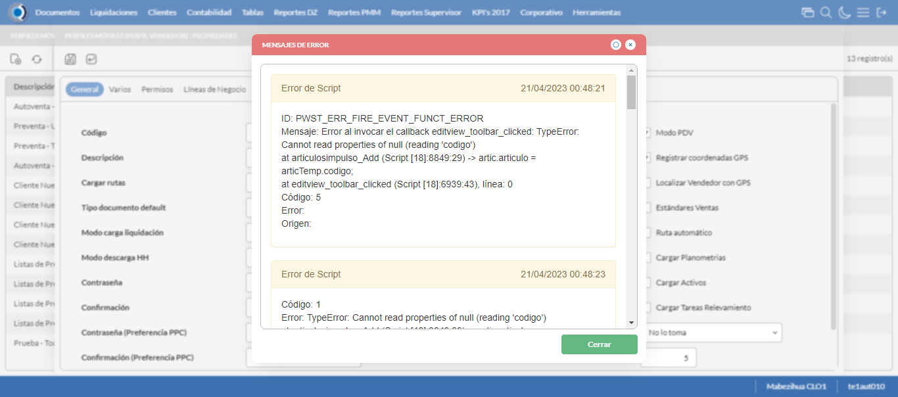
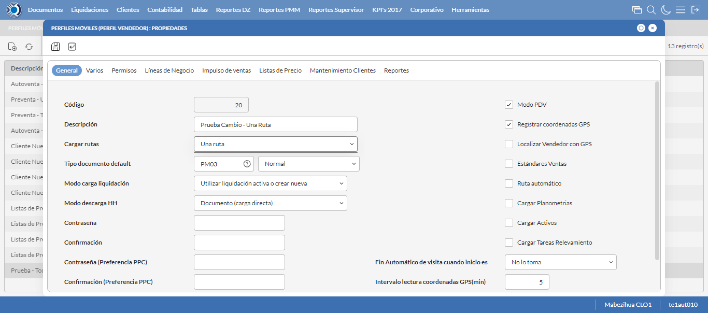

Desarrollado por : Area de Testing PWST
Fecha y hora de inicio : 2023-04-20 18:46:37
Duracion : 0:03:03.467159
Resultado : Total 8，Correctos 7 ，Errores 1 ，Taza de resultado 87.50%
Resumen 87.50% Errores 1 Fallidos 0 Correctos 7 Test realizados 8
| Caso de Prueba | Total | Correctos | Fallido | Error | Detalles | Captura del error |
| PerfilesMoviles.Test: Escenario 1 de Perfiles Moviles | 8 | 7 | 0 | 1 | Detalles | |
test |
ft1_1: 2023-04-20 18:46:39,115 - root - INFO - Se abre el chrome
2023-04-20 18:46:39,959 - root - INFO - Entra a la URL
2023-04-20 18:46:40,087 - root - INFO - Maximiza la pantalla
Traceback (most recent call last):
File "C:\Users\gerar\AppData\Local\Programs\Python\Python311\Lib\site-packages\selenium\webdriver\remote\switch_to.py", line 88, in frame
frame_reference = self._driver.find_element(By.ID, frame_reference)
^^^^^^^^^^^^^^^^^^^^^^^^^^^^^^^^^^^^^^^^^^^^^^^^^
File "C:\Users\gerar\AppData\Local\Programs\Python\Python311\Lib\site-packages\selenium\webdriver\remote\webdriver.py", line 861, in find_element
return self.execute(Command.FIND_ELEMENT, {"using": by, "value": value})["value"]
^^^^^^^^^^^^^^^^^^^^^^^^^^^^^^^^^^^^^^^^^^^^^^^^^^^^^^^^^^^^^^^^^
File "C:\Users\gerar\AppData\Local\Programs\Python\Python311\Lib\site-packages\selenium\webdriver\remote\webdriver.py", line 444, in execute
self.error_handler.check_response(response)
File "C:\Users\gerar\AppData\Local\Programs\Python\Python311\Lib\site-packages\selenium\webdriver\remote\errorhandler.py", line 249, in check_response
raise exception_class(message, screen, stacktrace)
selenium.common.exceptions.NoSuchElementException: Message: no such element: Unable to locate element: {"method":"css selector","selector":"[id="mainFrame"]"}
(Session info: chrome=112.0.5615.138)
Stacktrace:
Backtrace:
GetHandleVerifier [0x0091DCE3+50899]
(No symbol) [0x008AE111]
(No symbol) [0x007B5588]
(No symbol) [0x007E08F9]
(No symbol) [0x007E0AFB]
(No symbol) [0x0080F902]
(No symbol) [0x007FB944]
(No symbol) [0x0080E01C]
(No symbol) [0x007FB6F6]
(No symbol) [0x007D7708]
(No symbol) [0x007D886D]
GetHandleVerifier [0x00B83EAE+2566302]
GetHandleVerifier [0x00BB92B1+2784417]
GetHandleVerifier [0x00BB327C+2759788]
GetHandleVerifier [0x009B5740+672048]
(No symbol) [0x008B8872]
(No symbol) [0x008B41C8]
(No symbol) [0x008B42AB]
(No symbol) [0x008A71B7]
BaseThreadInitThunk [0x76047D49+25]
RtlInitializeExceptionChain [0x772CB74B+107]
RtlClearBits [0x772CB6CF+191]
During handling of the above exception, another exception occurred:
Traceback (most recent call last):
File "C:\Users\gerar\AppData\Local\Programs\Python\Python311\Lib\site-packages\selenium\webdriver\remote\switch_to.py", line 91, in frame
frame_reference = self._driver.find_element(By.NAME, frame_reference)
^^^^^^^^^^^^^^^^^^^^^^^^^^^^^^^^^^^^^^^^^^^^^^^^^^^
File "C:\Users\gerar\AppData\Local\Programs\Python\Python311\Lib\site-packages\selenium\webdriver\remote\webdriver.py", line 861, in find_element
return self.execute(Command.FIND_ELEMENT, {"using": by, "value": value})["value"]
^^^^^^^^^^^^^^^^^^^^^^^^^^^^^^^^^^^^^^^^^^^^^^^^^^^^^^^^^^^^^^^^^
File "C:\Users\gerar\AppData\Local\Programs\Python\Python311\Lib\site-packages\selenium\webdriver\remote\webdriver.py", line 444, in execute
self.error_handler.check_response(response)
File "C:\Users\gerar\AppData\Local\Programs\Python\Python311\Lib\site-packages\selenium\webdriver\remote\errorhandler.py", line 249, in check_response
raise exception_class(message, screen, stacktrace)
selenium.common.exceptions.NoSuchElementException: Message: no such element: Unable to locate element: {"method":"css selector","selector":"[name="mainFrame"]"}
(Session info: chrome=112.0.5615.138)
Stacktrace:
Backtrace:
GetHandleVerifier [0x0091DCE3+50899]
(No symbol) [0x008AE111]
(No symbol) [0x007B5588]
(No symbol) [0x007E08F9]
(No symbol) [0x007E0AFB]
(No symbol) [0x0080F902]
(No symbol) [0x007FB944]
(No symbol) [0x0080E01C]
(No symbol) [0x007FB6F6]
(No symbol) [0x007D7708]
(No symbol) [0x007D886D]
GetHandleVerifier [0x00B83EAE+2566302]
GetHandleVerifier [0x00BB92B1+2784417]
GetHandleVerifier [0x00BB327C+2759788]
GetHandleVerifier [0x009B5740+672048]
(No symbol) [0x008B8872]
(No symbol) [0x008B41C8]
(No symbol) [0x008B42AB]
(No symbol) [0x008A71B7]
BaseThreadInitThunk [0x76047D49+25]
RtlInitializeExceptionChain [0x772CB74B+107]
RtlClearBits [0x772CB6CF+191]
During handling of the above exception, another exception occurred:
Traceback (most recent call last):
File "C:\xampp\htdocs\versiones\automatizaciones\AutoPWST\01PM\testCase\PerfilesMoviles.py", line 31, in test
self.driver.switch_to.frame("mainFrame")
File "C:\Users\gerar\AppData\Local\Programs\Python\Python311\Lib\site-packages\selenium\webdriver\remote\switch_to.py", line 93, in frame
raise NoSuchFrameException(frame_reference)
selenium.common.exceptions.NoSuchFrameException: Message: mainFrame
|
|
||||
test_000: Ingresa a la base de datos |
pt1_2: 2023-04-20 18:46:43,194 - root - INFO - Escribe el usuario
2023-04-20 18:46:43,293 - root - INFO - Escribe la contraseña
2023-04-20 18:46:43,433 - root - INFO - Se dio clic en el boton ingresar
2023-04-20 18:46:44,128 - root - INFO - Ejecutar Enterprise
2023-04-20 18:46:48,225 - root - INFO - Cambia entre pestañas
|
|
||||
test_001: Abre menu y ejecuta pantalla |
pt1_3: 2023-04-20 18:48:00,110 - root - INFO - Se ingreso a la pantalla mediante el buscador porque fallo el ingreso por menus
2023-04-20 18:48:00,111 - root - INFO - La función buscador funciona de manera correcta.
2023-04-20 18:48:00,660 - root - INFO - La pantalla ejecutada es Perfiles Moviles
2023-04-20 18:48:00,660 - root - INFO - Captura: C:\xampp\htdocs\versiones\automatizaciones\AutoPWST\01PM\report\img screen：20230420_18_48_00.png
2023-04-20 18:48:00,808 - root - INFO - Se presiona el boton 'Nuevo', para crear un nuevo registro.
|
 | ||||
test_002: Abre la ventana de nuevo y crear un registro |
pt1_4: 2023-04-20 18:48:01,361 - root - INFO - Se abrio la pantalla para el ingreso de un registro nuevo.
2023-04-20 18:48:01,428 - root - INFO - Ingresa el codigo del nuevo registro
2023-04-20 18:48:01,552 - root - INFO - Ingresa la Descripcion del nuevo registro
2023-04-20 18:48:01,928 - root - INFO - Se selecciono la opción Todas las Rutas
2023-04-20 18:48:02,013 - root - INFO - Ingresa el Tipo documento default del nuevo registro
2023-04-20 18:48:02,393 - root - INFO - Se selecciono la opción Normal
2023-04-20 18:48:02,863 - root - INFO - Se selecciono el registro de Modo carga liquidación
2023-04-20 18:48:03,234 - root - INFO - Se selecciono la opción Documento (carga directa)
2023-04-20 18:48:03,312 - root - INFO - Se dió click en el checkbox Modo PDV
2023-04-20 18:48:03,380 - root - INFO - Se dió click en el checkbox Registrar coordenadas GPS
2023-04-20 18:48:03,764 - root - INFO - Se dió click en la opción No lo toma
2023-04-20 18:48:03,849 - root - INFO - Ingresa el Intervalo lectura coordenadas GPS(min) del nuevo registro
2023-04-20 18:48:03,849 - root - INFO - Captura: C:\xampp\htdocs\versiones\automatizaciones\AutoPWST\01PM\report\img screen：20230420_18_48_03.png
2023-04-20 18:48:06,027 - root - INFO - Se hace el cambio de pestaña Varios para continuar con el registro nuevo
2023-04-20 18:48:06,108 - root - INFO - Se dió click en el checkbox Cargar resumen de cuentas únicamente del vendedor de la ruta
2023-04-20 18:48:06,175 - root - INFO - Se dió click en el checkbox Verificar límite de crédito
2023-04-20 18:48:06,246 - root - INFO - Se dió click en el checkbox Verificar opción 'guardar como' del tipo de documento
2023-04-20 18:48:06,327 - root - INFO - Se dió click en el checkbox Permitir Pagos
2023-04-20 18:48:07,407 - root - INFO - Se dió click en el botón espacio para mover la pantalla hacía abajo
2023-04-20 18:48:08,791 - root - INFO - Se selecciono el registro de Disco de Datos
2023-04-20 18:48:09,166 - root - INFO - Se dió click en la opción Autoventa
2023-04-20 18:48:09,250 - root - INFO - Se dió click en el checkbox Enviar documentos de inmediato al servidor.
2023-04-20 18:48:09,314 - root - INFO - Se hace el cambio a la pestaña Permisos para continuar con el registro nuevo
2023-04-20 18:48:09,891 - root - INFO - Se presiona el boton 'Nuevo de la pestaña Permiso' , para crear un nuevo registro.
2023-04-20 18:48:11,353 - root - INFO - Se dió click en la opción Inihibir Georeferenciación
2023-04-20 18:48:11,442 - root - INFO - Se presiona el boton 'Guardar de la pestaña Permiso', para guardar el registro.
2023-04-20 18:48:11,651 - root - INFO - Se presiona el boton 'Nuevo de la pestaña Permiso' , para crear un nuevo registro.
2023-04-20 18:48:12,577 - root - INFO - Se dió click en la opción Anular Documentos
2023-04-20 18:48:12,652 - root - INFO - Se presiona el boton 'Guardar de la pestaña Permiso', para guardar el registro.
2023-04-20 18:48:12,911 - root - INFO - Se hace el cambio a la pestaña Lineas de Negocio para continuar con el registro nuevo
2023-04-20 18:48:13,492 - root - INFO - Se presiona el boton 'Nuevo de la pestaña Permiso' , para crear un nuevo registro.
2023-04-20 18:48:14,981 - root - INFO - Se selecciono el registro de Linea de negocio
2023-04-20 18:48:15,209 - root - INFO - Se presiona el boton 'Guardar de la pestaña Linea de Negocio', para guardar el registro.
2023-04-20 18:48:15,434 - root - INFO - Se presiona el boton 'Nuevo de la pestaña Permiso' , para crear un nuevo registro.
2023-04-20 18:48:16,908 - root - INFO - Se selecciono el registro de Linea de negocio
2023-04-20 18:48:17,131 - root - INFO - Se presiona el boton 'Guardar de la pestaña Linea de Negocio', para guardar el registro.
2023-04-20 18:48:17,360 - root - INFO - Se presiona el boton 'Nuevo de la pestaña Permiso' , para crear un nuevo registro.
2023-04-20 18:48:19,308 - root - INFO - Se selecciono el registro de Linea de negocio
2023-04-20 18:48:19,537 - root - INFO - Se presiona el boton 'Guardar de la pestaña Linea de Negocio', para guardar el registro.
2023-04-20 18:48:19,771 - root - INFO - Se hace el cambio a la pestaña Impulso Ventas para continuar con el registro nuevo
2023-04-20 18:48:20,370 - root - INFO - Se presiona el boton 'Nuevo de la pestaña Impulso de Ventas' , para crear un nuevo registro.
2023-04-20 18:48:20,964 - root - INFO - Ingresa el Articulo del nuevo registro
2023-04-20 18:48:23,089 - root - INFO - Se presiona el boton 'Guardar de la pestaña Impulso de Ventas', para guardar el registro.
2023-04-20 18:48:25,131 - root - INFO - Se presiona el boton 'Nuevo de la pestaña Impulso de Ventas' , para crear un nuevo registro.
2023-04-20 18:48:25,762 - root - INFO - Ingresa el Articulo del nuevo registro
2023-04-20 18:48:27,917 - root - INFO - Se presiona el boton 'Guardar de la pestaña Impulso de Ventas', para guardar el registro.
2023-04-20 18:48:29,959 - root - INFO - Se presiona el boton 'Nuevo de la pestaña Impulso de Ventas' , para crear un nuevo registro.
2023-04-20 18:48:30,581 - root - INFO - Ingresa el Articulo del nuevo registro
2023-04-20 18:48:32,698 - root - INFO - Se presiona el boton 'Guardar de la pestaña Impulso de Ventas', para guardar el registro.
2023-04-20 18:48:34,739 - root - INFO - Se presiona el boton 'Nuevo de la pestaña Impulso de Ventas' , para crear un nuevo registro.
2023-04-20 18:48:35,361 - root - INFO - Ingresa el Articulo del nuevo registro
2023-04-20 18:48:37,509 - root - INFO - Se presiona el boton 'Guardar de la pestaña Impulso de Ventas', para guardar el registro.
2023-04-20 18:48:39,555 - root - INFO - Se presiona el boton 'Nuevo de la pestaña Impulso de Ventas' , para crear un nuevo registro.
2023-04-20 18:48:40,194 - root - INFO - Ingresa el Articulo del nuevo registro
2023-04-20 18:48:42,320 - root - INFO - Se presiona el boton 'Guardar de la pestaña Impulso de Ventas', para guardar el registro.
2023-04-20 18:48:44,415 - root - INFO - Se hace el cambio a la pestaña Mantenimiento Clientes para continuar con el registro nuevo
2023-04-20 18:48:45,025 - root - INFO - Se dió click en el checkbox Permiso agregar nuevos clientes
2023-04-20 18:48:45,098 - root - INFO - Se dió click en el checkbox Permiso modificar clientes existentes
2023-04-20 18:48:46,082 - root - INFO - Se selecciono el registro de Ruta Referencia
2023-04-20 18:48:46,282 - root - INFO - Se dió click en el checkbox Clasificación 1
2023-04-20 18:48:46,397 - root - INFO - Se dió click en el checkbox Clasificación 2
2023-04-20 18:48:46,502 - root - INFO - Se dió click en el checkbox Clasificación 3
2023-04-20 18:48:46,607 - root - INFO - Se dió click en el checkbox Colonia
2023-04-20 18:48:46,712 - root - INFO - Se dió click en el checkbox Codigo Postal
2023-04-20 18:48:46,824 - root - INFO - Se dió click en el checkbox Direccion
2023-04-20 18:48:46,934 - root - INFO - Se dió click en el checkbox Entorno PDV
2023-04-20 18:48:47,053 - root - INFO - Se dió click en el checkbox Esquina 1
2023-04-20 18:48:47,163 - root - INFO - Se dió click en el checkbox Esquina 2
2023-04-20 18:48:47,282 - root - INFO - Se dió click en el checkbox Paises
2023-04-20 18:48:47,406 - root - INFO - Se dió click en el checkbox Departamento
2023-04-20 18:48:47,499 - root - INFO - Se dió click en el checkbox Localidad
2023-04-20 18:48:47,641 - root - INFO - Se da clic en el boton Guardar; se debe crear un nuevo registro.
|
 | ||||
test_003: Repite el Registro |
pt1_5: 2023-04-20 18:48:48,116 - root - INFO - Se presiona el boton 'Refrescar', para crear un nuevo registro igual al anterior.
2023-04-20 18:48:50,177 - root - INFO - Se presiona el boton 'Nuevo', para crear un nuevo registro igual al anterior.
2023-04-20 18:48:50,725 - root - INFO - Se abrio la pantalla para el ingreso de un registro nuevo.
2023-04-20 18:48:50,784 - root - INFO - Ingresa el codigo del nuevo registro
2023-04-20 18:48:50,911 - root - INFO - Ingresa la Descripcion del nuevo registro
2023-04-20 18:48:51,291 - root - INFO - Se selecciono la opción Todas las Rutas
2023-04-20 18:48:51,401 - root - INFO - Ingresa el Tipo documento default del nuevo registro
2023-04-20 18:48:51,876 - root - INFO - Se selecciono la opción Normal
2023-04-20 18:48:52,264 - root - INFO - Se selecciono el registro de Modo carga liquidación
2023-04-20 18:48:52,652 - root - INFO - Se selecciono la opción Documento (carga directa)
2023-04-20 18:48:52,740 - root - INFO - Se dió click en el checkbox Modo PDV
2023-04-20 18:48:52,810 - root - INFO - Se dió click en el checkbox Registrar coordenadas GPS
2023-04-20 18:48:53,181 - root - INFO - Se dió click en la opción No lo toma
2023-04-20 18:48:53,266 - root - INFO - Ingresa el Intervalo lectura coordenadas GPS(min) del nuevo registro
2023-04-20 18:48:55,336 - root - INFO - Se da clic en el boton Guardar; NO se debe crear un nuevo registro.
2023-04-20 18:48:57,456 - root - INFO - Se da clic en el boton del mensaje de registro duplicado
2023-04-20 18:48:59,458 - root - INFO - Captura: C:\xampp\htdocs\versiones\automatizaciones\AutoPWST\01PM\report\img screen：20230420_18_48_59.png
2023-04-20 18:48:59,638 - root - INFO - Se presiona el boton 'Cerrar', para cerrar el mensaje de duplicidad de llave primaria
2023-04-20 18:48:59,783 - root - INFO - Se presiona el boton 'Cerrar', para cerrar la ventana
|
 | ||||
test_004: Modificar el registro |
pt1_6: 2023-04-20 18:48:59,887 - root - INFO - Se presiona el boton 'Refrescar', para proceder a modificar el registro.
2023-04-20 18:49:02,459 - root - INFO - Se da clic en el registro creado, para proceder a modificarlo.
2023-04-20 18:49:03,134 - root - INFO - Se modifica el contenido del campo Observaciones 1
2023-04-20 18:49:03,499 - root - INFO - Se selecciono la opción Una Ruta
2023-04-20 18:49:03,499 - root - INFO - Captura: C:\xampp\htdocs\versiones\automatizaciones\AutoPWST\01PM\report\img screen：20230420_18_49_03.png
2023-04-20 18:49:03,681 - root - INFO - Se hace el cambio de pestaña Permisos para continuar con la modificación del registro
2023-04-20 18:49:03,882 - root - INFO - Se hace el cambio a la pestaña Lineas de Negocio para continuar con la modificación del registro
2023-04-20 18:49:04,095 - root - INFO - Se da clic en el boton Guardar; se debe modificar la informacion del registro.
|
 | ||||
test_005: Eliminar el registro creado |
pt1_7: 2023-04-20 18:49:06,146 - root - INFO - Se presiona el boton 'Refrescar', para proceder a eliminar el registro.
2023-04-20 18:49:08,724 - root - INFO - Se da clic en el registro creado, para proceder a eliminarlo.
2023-04-20 18:49:09,306 - root - INFO - Se hace el cambio de pestaña Permisos para continuar con la eliminación del registro
2023-04-20 18:49:10,387 - root - INFO - Se da clic en el primer registro de Permisos, para proceder a eliminarlo.
2023-04-20 18:49:10,459 - root - INFO - Se presiona el boton 'Eliminar de Permiso', para eliminar el segundo registro.
2023-04-20 18:49:12,036 - root - INFO - Se da clic en el segundo registro de Permisos, para proceder a Eliminarlo.
2023-04-20 18:49:12,071 - root - INFO - Se presiona el boton 'Eliminar de Permiso', para eliminar el segundo registro.
2023-04-20 18:49:13,141 - root - INFO - Se hace el cambio a la pestaña Lineas de Negocio para continuar con la eliminación del registro
2023-04-20 18:49:14,223 - root - INFO - Se da clic en el primer registro de Linea de Negocio, para proceder a Eliminarlo.
2023-04-20 18:49:14,311 - root - INFO - Se presiona el boton 'Eliminar de Linea de Negocio', para eliminar el primer registro.
2023-04-20 18:49:15,891 - root - INFO - Se da clic en el segundo registro Linea de negocio, para proceder a Eliminarlo.
2023-04-20 18:49:15,920 - root - INFO - Se presiona el boton 'Eliminar de Linea de Negocio', para eliminar el segundo registro.
2023-04-20 18:49:17,482 - root - INFO - Se da clic en el tercer registro Lineas de Negocio, para proceder a Eliminarlo.
2023-04-20 18:49:17,522 - root - INFO - Se presiona el boton 'Eliminar de Linea de Negocio', para eliminar el tercer registro.
2023-04-20 18:49:18,606 - root - INFO - Se hace el cambio de pestaña Impulso Ventas para continuar con la modificación del registro
2023-04-20 18:49:19,704 - root - INFO - Se da clic en el registro creado, para proceder a modificarlo.
2023-04-20 18:49:19,783 - root - INFO - Se presiona el boton 'Eliminar de Impulso Ventas', para eliminar el primer registro.
2023-04-20 18:49:21,359 - root - INFO - Se da clic en el registro creado, para proceder a modificarlo.
2023-04-20 18:49:21,401 - root - INFO - Se presiona el boton 'Eliminar de Impulso Ventas', para eliminar el segundo registro.
2023-04-20 18:49:22,970 - root - INFO - Se da clic en el registro creado, para proceder a modificarlo.
2023-04-20 18:49:23,020 - root - INFO - Se presiona el boton 'Eliminar de Impulso Ventas', para eliminar el tercer registro.
2023-04-20 18:49:24,585 - root - INFO - Se da clic en el registro creado, para proceder a modificarlo.
2023-04-20 18:49:24,625 - root - INFO - Se presiona el boton 'Eliminar de Impulso Ventas', para eliminar el cuarto registro.
2023-04-20 18:49:26,206 - root - INFO - Se da clic en el registro creado, para proceder a modificarlo.
2023-04-20 18:49:26,250 - root - INFO - Se presiona el boton 'Eliminar de Impulso Ventas', para eliminar el quinto registro.
2023-04-20 18:49:27,322 - root - INFO - Se hace el cambio a la pestaña Mantenimiento Clientes para continuar con la eliminación del registro
2023-04-20 18:49:27,914 - root - INFO - Se dió click en el checkbox Clasificación 1
2023-04-20 18:49:28,515 - root - INFO - Se dió click en el checkbox Clasificación 2
2023-04-20 18:49:28,619 - root - INFO - Se dió click en el checkbox Clasificación 3
2023-04-20 18:49:28,735 - root - INFO - Se dió click en el checkbox Colonia
2023-04-20 18:49:28,830 - root - INFO - Se dió click en el checkbox Codigo Postal
2023-04-20 18:49:28,968 - root - INFO - Se dió click en el checkbox Direccion
2023-04-20 18:49:29,072 - root - INFO - Se dió click en el checkbox Entorno PDV
2023-04-20 18:49:29,161 - root - INFO - Se dió click en el checkbox Esquina 1
2023-04-20 18:49:29,307 - root - INFO - Se dió click en el checkbox Esquina 2
2023-04-20 18:49:29,394 - root - INFO - Se dió click en el checkbox Paises
2023-04-20 18:49:29,521 - root - INFO - Se dió click en el checkbox Departamento
2023-04-20 18:49:29,665 - root - INFO - Se dió click en el checkbox Localidad
2023-04-20 18:49:29,791 - root - INFO - Se da clic en el boton Guardar; se debe modificar la informacion del registro.
2023-04-20 18:49:30,357 - root - INFO - Se da clic en el registro creado, para proceder a eliminarlo.
2023-04-20 18:49:30,423 - root - INFO - Se presiona el boton 'Eliminar', para eliminar el registro.
2023-04-20 18:49:32,426 - root - INFO - Captura: C:\xampp\htdocs\versiones\automatizaciones\AutoPWST\01PM\report\img screen：20230420_18_49_32.png
2023-04-20 18:49:32,579 - root - INFO - Se confirma el eliminado del registro
2023-04-20 18:49:32,775 - root - INFO - Se presiona el boton 'Refrescar', para verificar si el registro ha sido eliminado.
2023-04-20 18:49:34,843 - root - INFO - Se presiona el boton 'Cerrar', para cerrar la pantalla de Perfiles Moviles.
|

|
||||
test_006: Cerrar_Navegador |
pt1_8: 2023-04-20 18:49:41,189 - root - INFO - Se cierra chrome
|
|
||||
| Caso de prueba | 8 | 7 | 0 | 1 | Taza de resultado：87.50% | |